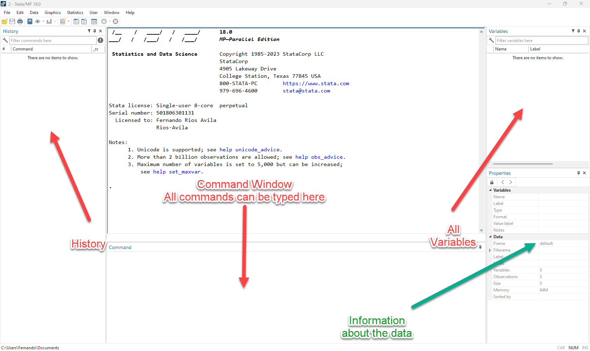
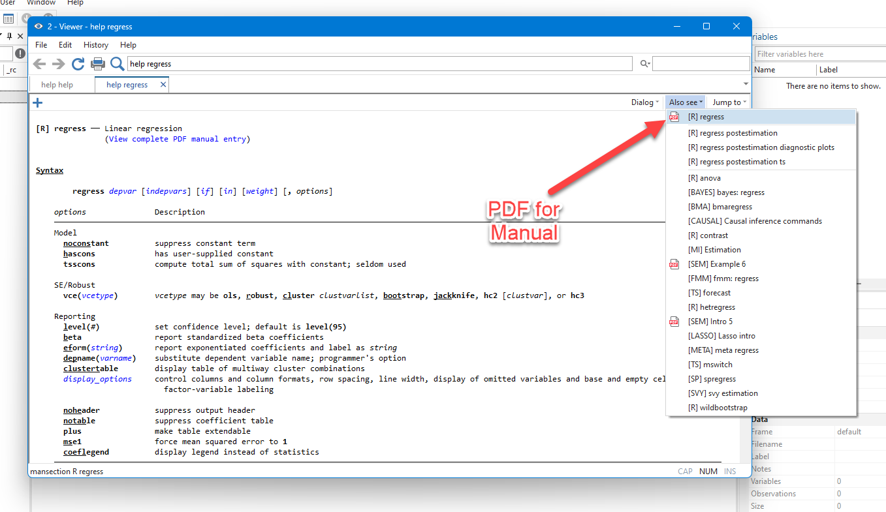
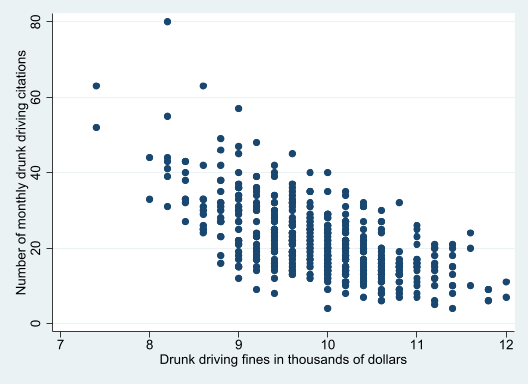
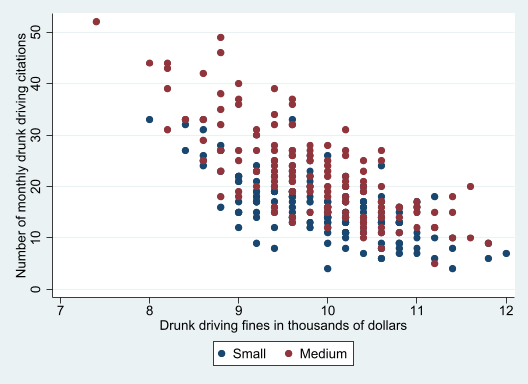

. display "Hola"
Hola
. display "2+2=" 2+2
2+2=4
. display "The probability that z >1.95 is " %5.3f 1-normal(1.95)
The probability that z >1.95 is 0.026
. Stata-Basics
Get to know Stata

Command Window
- You can use command window to type and excute commands directly into
Stata. - Great for interactive exploration and analysis…
- But highly recommended that Final analysis is “always” done in a “do-file”
Help
- 99% of Stata commands come with Extensive help.
- If you do not know how to use a command, or about a test just “ask for help”
help help[R] help -- Display help in Stata
-------------------------------------------------------------------------------
Stata's help system
There are several kinds of help available to the Stata user. For more
information, see Advice on getting help. The information below is
technical details about Stata's help command.
-------------------------------------------------------------------------------
Syntax
help [command_or_topic_name] [, nonew name(viewername)
marker(markername)]
Menu
Help > Stata command...
Description
The help command displays help information about the specified command or
topic. help launches a new Viewer to display help for the specified
command or topic or displays help on the console in Stata for
Unix(console). If help is not followed by a command or a topic name,
Stata displays advice for using the help system and documentation.For estimation commands, and specialized tests, help even provides links to the manuals.
The manuals have extensive detailed information on methods, formulas, references, and examples.

Of course there is 1% that is “documented/undocumented” or truly undocumented.
Most Community-contributed commands also have helpfiles, but are not always fully documented.
You could also ask for helps on “topics”:
help sample selection
Installing Programs
Stata, for all practical purposes, is self-contained.- You do not need outside sources to analyze your data, estimate models, create tables, etc.
- However, many users provide add-ons that may help to make your work “easier”
- Main Stata repository : Boston College Statistical Software Components (SSC) archive
** For using Wooldridge Book Datasets
ssc install frause, replace
** For Easiy tables
net install estout, replace from(https://raw.githubusercontent.com/benjann/estout/master/)
** My own installer for extra utilities
net install fra, replace from(https://friosavila.github.io/stpackages)
fra install fra_tools, replace- If at any point there is code that produces an error, and there is no
help, let me know.
Loading Data
StataFiles have format dta.- Loading Stata-data into
Statais very easy.- Double-click (opens a new
Stata) - Drag and Drop into your
Statainstance - Load it from menu File>open
- or using a do-file or command window
- Double-click (opens a new
- Other Formats required extra work.
- Use other software to “translate” it into Stata
- Menu: File>import> many choices
Stata System-files
. ** Most Stata example files
. ** Syntax: sysuse [filename], [clear]
. sysuse dir
abortion.dta citytemp.dta nlsw88.dta titanic.dta
auto.dta citytemp4.dta nlswide1.dta tsline1.dta
auto16.dta educ99gdp.dta oaxaca.dta tsline2.dta
auto2.dta gapminder.dta pop2000.dta uslifeexp.dta
autornd.dta gnp96.dta ri.dta uslifeexp2.dta
avocado.dta lifeexp.dta sandstone.dta voter.dta
bplong.dta mortgages.dta scorecard.dta xtline1.dta
bpwide.dta mroz.dta snow.dta yule.dta
cancer.dta network1.dta sp500.dta
castle.dta network1a.dta surface.dta
census.dta nhefs.dta texas.dta
. Other
** Web data from Stata
webuse "data-file-address", clear
** From other sites
webuse set [webaddress]
webuse data-file-address, clear
webuse set
** from frause and Wooldrige
frause , dir
frause wage1, clear
** from anyadress
use "filename-adress", clear
use "https://friosavila.github.io/playingwithstata/data2/wage1.dta", clearBasic Data description
. sysuse auto, clear
(1978 automobile data)
. des
Contains data from C:\Program Files\Stata17/ado\base/a/auto.dta
Observations: 74 1978 automobile data
Variables: 12 13 Apr 2020 17:45
(_dta has notes)
-------------------------------------------------------------------------------
Variable Storage Display Value
name type format label Variable label
-------------------------------------------------------------------------------
make str18 %-18s Make and model
price int %8.0gc Price
mpg int %8.0g Mileage (mpg)
rep78 int %8.0g Repair record 1978
headroom float %6.1f Headroom (in.)
trunk int %8.0g Trunk space (cu. ft.)
weight int %8.0gc Weight (lbs.)
length int %8.0g Length (in.)
turn int %8.0g Turn circle (ft.)
displacement int %8.0g Displacement (cu. in.)
gear_ratio float %6.2f Gear ratio
foreign byte %8.0g origin Car origin
-------------------------------------------------------------------------------
Sorted by: foreign
. list in 1/3
+------------------------------------------------------------------------+
1. | make | price | mpg | rep78 | headroom | trunk | weight | length |
| AMC Concord | 4,099 | 22 | 3 | 2.5 | 11 | 2,930 | 186 |
|------------------------------------------------------------------------|
| turn | displa~t | gear_r~o | foreign |
| 40 | 121 | 3.58 | Domestic |
+------------------------------------------------------------------------+
+------------------------------------------------------------------------+
2. | make | price | mpg | rep78 | headroom | trunk | weight | length |
| AMC Pacer | 4,749 | 17 | 3 | 3.0 | 11 | 3,350 | 173 |
|------------------------------------------------------------------------|
| turn | displa~t | gear_r~o | foreign |
| 40 | 258 | 2.53 | Domestic |
+------------------------------------------------------------------------+
+------------------------------------------------------------------------+
3. | make | price | mpg | rep78 | headroom | trunk | weight | length |
| AMC Spirit | 3,799 | 22 | . | 3.0 | 12 | 2,640 | 168 |
|------------------------------------------------------------------------|
| turn | displa~t | gear_r~o | foreign |
| 35 | 121 | 3.08 | Domestic |
+------------------------------------------------------------------------+
.
. webuse smoking, clear
(Smoking and mortality data)
. des
Contains data from https://www.stata-press.com/data/r17/smoking.dta
Observations: 17,260 Smoking and mortality data
Variables: 16 27 Dec 2020 15:21
(_dta has notes)
-------------------------------------------------------------------------------
Variable Storage Display Value
name type format label Variable label
-------------------------------------------------------------------------------
serno int %10.0g Serial number
cigs byte %10.0g Daily cigarette consumption
sysbp int %10.0g Systolic blood pressure (mm Hg)
diasbp float %10.0g Diastolic blood pressure (mm Hg)
map float %9.0g Mean arterial pressure (mm Hg)
age byte %10.0g Age (years)
ht double %10.0g Height (cm)
wt double %10.0g Weight (kg)
chol double %10.0g Cholesterol (mmol/l)
gradd1 byte %8.0g Job grade 1
gradd2 byte %8.0g Job grade 2
gradd3 byte %8.0g Job grade 3
all10 byte %8.0g Ten year mortality
pyar double %10.0g Years of follow-up
chd byte %10.0g Censoring (0 = censored, 1 = died
of CHD)
jobgrade byte %10.0g Job grade
-------------------------------------------------------------------------------
Sorted by:
. list cigs map age ht gradd1 in 1/3
+-----------------------------------------+
| cigs map age ht gradd1 |
|-----------------------------------------|
1. | 0 97 46 154.94 0 |
2. | 0 97.66666 55 179.07 1 |
3. | 0 82 43 173.99 1 |
+-----------------------------------------+
.
. frause smoking, clear
(A.C.Cameron & P.K.Trivedi (2022): Microeconometrics Using Stata, 2e)
. des
Contains data from https://friosavila.github.io/playingwithstata/data2/smoking.
> dta
Observations: 1,209 A.C.Cameron & P.K.Trivedi
(2022): Microeconometrics Using
Stata, 2e
Variables: 7 5 Oct 2022 13:08
-------------------------------------------------------------------------------
Variable Storage Display Value
name type format label Variable label
-------------------------------------------------------------------------------
state byte %14.0g state State no
year int %9.0g Year
cigsale float %9.0g Cigarette sale per capita (in
packs)
lnincome float %9.0g Log state per capita GDP
beer float %9.0g Beer consumption per capita
age15to24 float %9.0g Percent of state population aged
15–24 years
retprice float %9.0g Retail price of cigarettes
-------------------------------------------------------------------------------
Sorted by: year
. list in 1/3
+-----------------------------------------------------------------------+
| state year cigsale lnincome beer age15~24 retprice |
|-----------------------------------------------------------------------|
1. | Rhode Island 1970 123.9 . . .1831579 39.3 |
2. | Tennessee 1970 99.8 . . .1780438 39.9 |
3. | Indiana 1970 134.6 . . .1765159 30.6 |
+-----------------------------------------------------------------------+
. Summary Statistics
- Summary Statistics are essential before starting basic analysis.
Statagives you many options. Although not all of them are easy to export.
. frause oaxaca, clear
(Excerpt from the Swiss Labor Market Survey 1998)
. *summarize [varlist] [if] [in] [weight] [, options]
. summarize if female==1, sep(0)
Variable | Obs Mean Std. dev. Min Max
-------------+---------------------------------------------------------
lnwage | 683 3.266761 .5700236 .507681 5.259097
educ | 888 11.06025 2.26024 5 17.5
exper | 683 12.13769 8.32663 0 41.91667
tenure | 683 6.605051 6.727475 0 40.08333
isco | 683 3.920937 1.762983 1 9
female | 888 1 0 1 1
lfp | 888 .7691441 .4216179 0 1
age | 888 39.88401 10.72665 18 62
agesq | 888 1705.666 879.4667 324 3844
single | 888 .3018018 .4592984 0 1
married | 888 .5236486 .4997219 0 1
divorced | 888 .1745495 .3797953 0 1
kids6 | 888 .286036 .6726639 0 4
kids714 | 888 .375 .7538888 0 4
wt | 888 .9883364 .4030975 .5302977 3.181786
.
. * tabstat varlist [if] [in] [weight] [, options]
. tabstat educ exper tenure age married, by(female)
Summary statistics: Mean
Group variable: female (sex of respondent (1=female))
female | educ exper tenure age married
---------+--------------------------------------------------
0 | 11.8004 14.07684 9.003107 38.51647 .5230567
1 | 11.06025 12.13769 6.605051 39.88401 .5236486
---------+--------------------------------------------------
Total | 11.40134 13.15324 7.860937 39.25379 .5233758
------------------------------------------------------------
. tabstat educ exper tenure , by(female) stats(p10 p50 p90)
Summary statistics: p10, p50, p90
Group variable: female (sex of respondent (1=female))
female | educ exper tenure
---------+------------------------------
0 | 10.5 1.416667 .4166667
| 10.5 11.08333 6.25
| 17.5 31.33333 23.25
---------+------------------------------
1 | 9 2.25 .3333333
| 10.5 10.75 4.25
| 12.5 23.375 15.75
---------+------------------------------
Total | 9 1.833333 .4166667
| 10.5 10.91667 5.291667
| 15 28.08333 19.41667
----------------------------------------
.
. ssc install table1
checking table1 consistency and verifying not already installed...
all files already exist and are up to date.
. * see help table1
. table1, by(female) vars(lnwage contn %3.2f \ age contn %2.1f \ married bin)
+--------------------------------------------------------------------+
| Factor female = 0 female = 1 p-value |
|--------------------------------------------------------------------|
| N 759 888 |
|--------------------------------------------------------------------|
| log hourly wages, mean (SD) 3.44 (0.48) 3.27 (0.57) <0.001 |
|--------------------------------------------------------------------|
| age of respondent, mean (SD) 38.5 (11.3) 39.9 (10.7) 0.012 |
|--------------------------------------------------------------------|
| married 397 (52.3%) 465 (52.4%) 0.98 |
+--------------------------------------------------------------------+
. qui:table1, by(female) vars(lnwage contn %3.2f \ age contn %2.1f \ married bi
> n) saving(m1.xls)
file m1.xls already exists
r(602);You can see the file here
There are other options from
Stataas well. seehelp dtableandhelp table.Or you could construct some yourself with the help of
estoutandesttab.See here for a quick guide on tables.
Creating variables
- Two main commands:
generate(orgenfor short): Creates new variables as a function of others in the data. One can apply system functions. Example:gen var1 = 1gen var2 = _ngen wage = exp(lnwage)gen age_educ = age * educ
replace: replaces values in an already existing variable.replace wage = 0 if wage==.replace age_educ = . if female==1
egen: Advanced variable generating function. It applies a single function to a variable or list of variables to create a third one.egen wage_mean=mean(exp(lnwage)), by(female)egen wage_p10=pctile(lnwage), by(female) p(10)
- To delete a variable, you can use
drop varname/varlistordrop2 varname/varlistdropis the official. Stops if the variable does not exist.drop2an addon. Will still work even if a variable name does not exist.
Requires using full variable name.
. gen var1 = exp(lnwage)
(213 missing values generated)
. gen xar2 = exp(lnwage)+married
(213 missing values generated)
. drop x
. des var1 xar2
variable xar2 not found
r(111);
. gen xar2 = exp(lnwage)+married
(213 missing values generated)
. drop2 x
variable x not found
. Variables Management
Statais case sensitive.- You can create variables with names
one,One,OnE,ONE, etc. - “file addresses” and commands are also case sensitive
- You can create variables with names
- In
Stata, variable names cannot can only start with a letter or “_“. Otherwise, it will give you an error. - Once variables are created, you could “label” them
label var variable_name "Description" - You can name other components of a dataset as well. See
help label
Plots in Stata
Statacan create figures and plots for data exploration
Scatter plot
. webuse dui, clear
(Fictional data on monthly drunk driving citations)
. scatter citations fines
. 
. two (scatter citations fines if csize==1) ///
> (scatter citations fines if csize==2), ///
> legend(order(1 "Small" 2 "Medium"))
. 
- The limitation. User written plotting commands do not interact well with Official plotting commands.
Saving your work
Command Window is effective to provide interactive analysis
At the end of your session, you can recover everything you did, clicking on the History Section, and save everythig, or just specific commands.
The best approach, however, is to ALWAYS use a do-file.
First of all: Create a working directory. A folder in your computer that will hold your project, work, paper, homework, etc. (highly recommended)
Create a dofile: For simple projects a single file will suffice, but multiple may be needed for larger ones.
To start a dofile, simply type
doedit "filename"in your command window.- If file exists in your “working directory” (type
cdto see where you “are”), it will open it. - Otherwise, a new file will be created
- If file exists in your “working directory” (type
do-filesare the best approach to save your work, and keep track of your analysis.General Suggestion: Allways add comments to it, to know what you are doing
* You can always Start a command like this
// Or like this
/*
But you can always add a large comment using "/*" to start
and "*/" to end it
*/
/* You could also add comments at the end of a command */
sysuse auto, clear // Loading Auto Dataset, after "clearing" the one currently in memory
// Or as I did before, break a long command in various lines using "///"
// Comments after "///" are possible
regress price /// Dep variable
mpg /// indep variable
i.foreign, /// Foreign Dummy
robust // Request Robust Standard errors.
** Last one has only two "/", because line ends there(1978 automobile data)
Linear regression Number of obs = 74
F(2, 71) = 12.72
Prob > F = 0.0000
R-squared = 0.2838
Root MSE = 2530.9
------------------------------------------------------------------------------
| Robust
price | Coefficient std. err. t P>|t| [95% conf. interval]
-------------+----------------------------------------------------------------
mpg | -294.1955 60.33645 -4.88 0.000 -414.503 -173.8881
|
foreign |
Foreign | 1767.292 607.7385 2.91 0.005 555.4961 2979.088
_cons | 11905.42 1362.547 8.74 0.000 9188.573 14622.26
------------------------------------------------------------------------------Estimation Commands
- Most commands in
Statahave the following syntax:
[by varlist:/prefix] command [varlist] [if exp] [in range] [weight] [using filename] [,options]- everything in
[]are optional. [by varlist:/prefix]:byis used to execute the command by groups.
prefixto request additional manipulation (advanced use)command: The command itself that will process the datavarlist: For Estimation commands include the dependent (first) and independent variables (everything else)[if exp] [in range]: To restrict samples[weight]: Request the use of weights ie:[fw = wgt_var]or[pw = wgt_var][using filename]: Some commands allow you to use this to work with not-yet loaded datasets or files.[options]: Options requesting specific behaivior, statistics, etc
Adv options for saving work.
- Use
github, as an additional data-repository - Combine
Stata,pythonandnbstatto createJupyter notebooks. - You can also use Quarto to create full dynamic reports.